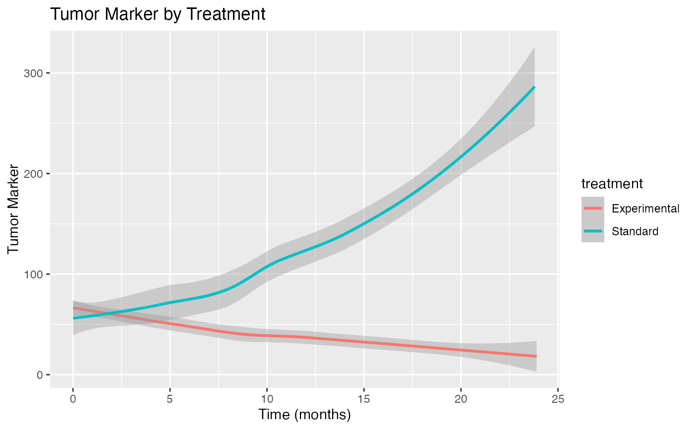
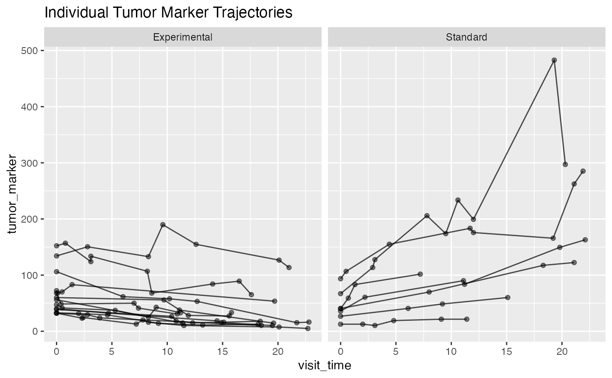

Simple Tumor Marker and Cancer Progression Data
Source:R/joint_modeling_data.R
simple_cancer_data.RdA simplified longitudinal dataset containing tumor marker measurements and cancer progression for 100 cancer patients. Ideal for teaching and initial exploration of joint models.
Format
A data frame with 588 observations and 6 variables:
- patient_id
Character. Unique patient identifier (CA_001 to CA_100)
- age
Numeric. Patient age at baseline (years)
- treatment
Factor. Treatment group (Standard, Experimental)
- visit_time
Numeric. Time of tumor marker measurement (months from baseline)
- tumor_marker
Numeric. Tumor marker level (units/mL)
- survival_time
Numeric. Time to progression/death or last follow-up (months)
- progression_status
Numeric. Event indicator (0 = censored, 1 = progression/death)
Details
This simplified dataset is perfect for:
Learning joint modeling concepts
Quick algorithm testing
Demonstrating treatment effects
Smaller sample size for faster computation
Clear biomarker-survival relationship
Features:
Tumor marker levels generally increase over time
Experimental treatment slows marker increase
Higher marker levels increase progression hazard
10% event rate over 24 months follow-up
Examples
data(simple_cancer_data)
# Basic joint modeling analysis
library(ggplot2)
# Marker trajectories by treatment
ggplot(simple_cancer_data, aes(x = visit_time, y = tumor_marker, color = treatment)) +
geom_smooth(method = "loess") +
labs(title = "Tumor Marker by Treatment",
x = "Time (months)", y = "Tumor Marker")
#> `geom_smooth()` using formula = 'y ~ x'

# Individual trajectories for first 20 patients
first_20 <- subset(simple_cancer_data, patient_id %in% unique(patient_id)[1:20])
ggplot(first_20, aes(x = visit_time, y = tumor_marker, group = patient_id)) +
geom_line(alpha = 0.7) + geom_point(alpha = 0.5) +
facet_wrap(~treatment) +
labs(title = "Individual Tumor Marker Trajectories")
